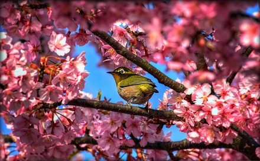
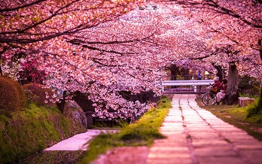
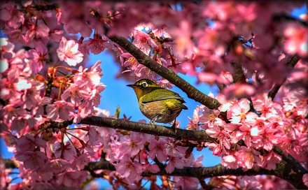
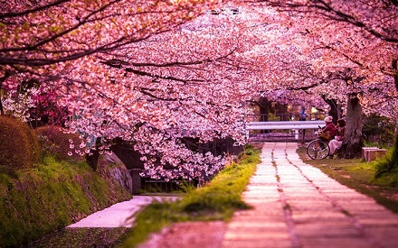
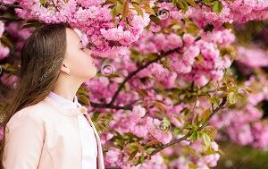

Черги під деревами – без перебільшення, черги під деревами - щоб зробити фото! Завдяки сакурам Ужгород перетворився в туристичну Мекку! Натовпи людей кожного дня гуляють набережними Ужа та маленькими покрученими вуличками центральної частини міста в пошуках красивих місць для фотосесій. У затишних куточках – художники з мольбертами, на площах – фести, виступи, концерти, в спортивних залах – змагання, і все присвячене сакурі. Ужгородці кажуть, що стільки людей в місті просто не пригадують. На вулицях, проспектах, площах, у садах, городах та біля прибудинкових територій – сакури в Ужгороді можна зустріти на кожному кроці. Обласний центр Закарпаття вже традиційно асоціюється в Україні з японською вишнею, і в дні цвітіння дерев тут відбуваються масові заходи, які збирають десятки тисяч людей – як з України, так і з країн-сусідів. Сакура на Закарпатті давно стала традицією, символом, навколо якого існує немало цікавих історій.
| Послуга | Тривалість | Ціна |
| Автобусна екскурсія | 1 доба | 1 000 грн |
| Тур вихідного дня | 3 доби | 2 000 грн |
| Трансфер до Ужгорода | 12 год | 350 грн/в один бік |
Наші туристи
Відгуки
Класна екскурсія, нам дуже сподобалося! Хороший інформаційний супровід і приємний гід. Будемо радити друзям.